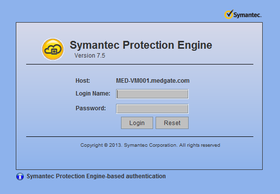
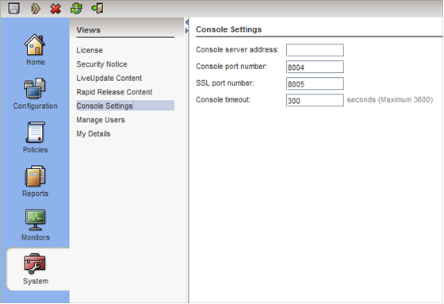
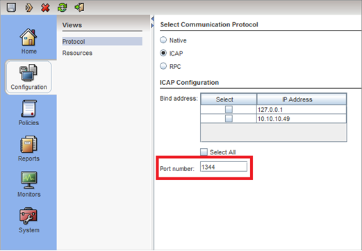
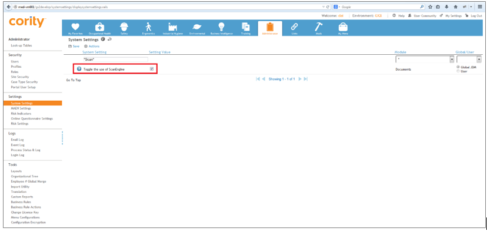
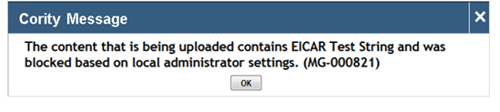

Cority can scan uploaded files for viruses using the Symantec Protection Engine for Cloud Services. Follow Symantec’s installation instructions to install the software. Once Symantec Protection Engine for Cloud Services is installed, the port number and login credentials specified during the installation will enable you to access its console.

The port number can be changed at any time using the Protection Engine’s console settings.

For the Protection Engine to run properly, ensure that in Configuration > Protocol, ICAP is set as the communication protocol and that an appropriate port number is provided.

In the Cority server.config file, add the lines of code shown below:
Address is the URL of the server on which Protection Engine is installed and Port is the port number specified in the Protection Engine console settings.
<ScanEngine>
<Address>[Installed URL]</Address>
<Port>[ICAP Port]</Port>
</ScanEngine>
In this case it would be:
<ScanEngine>
<Address>10.10.10.49<Address>
<Port>1344</Port>
</ScanEngine>
With the following system setting, Cority’s use of the Protection Engine can be toggled on or off:

When the system setting is selected, documents being uploaded will be scanned automatically. If a document contains a virus, you will see an error message.
